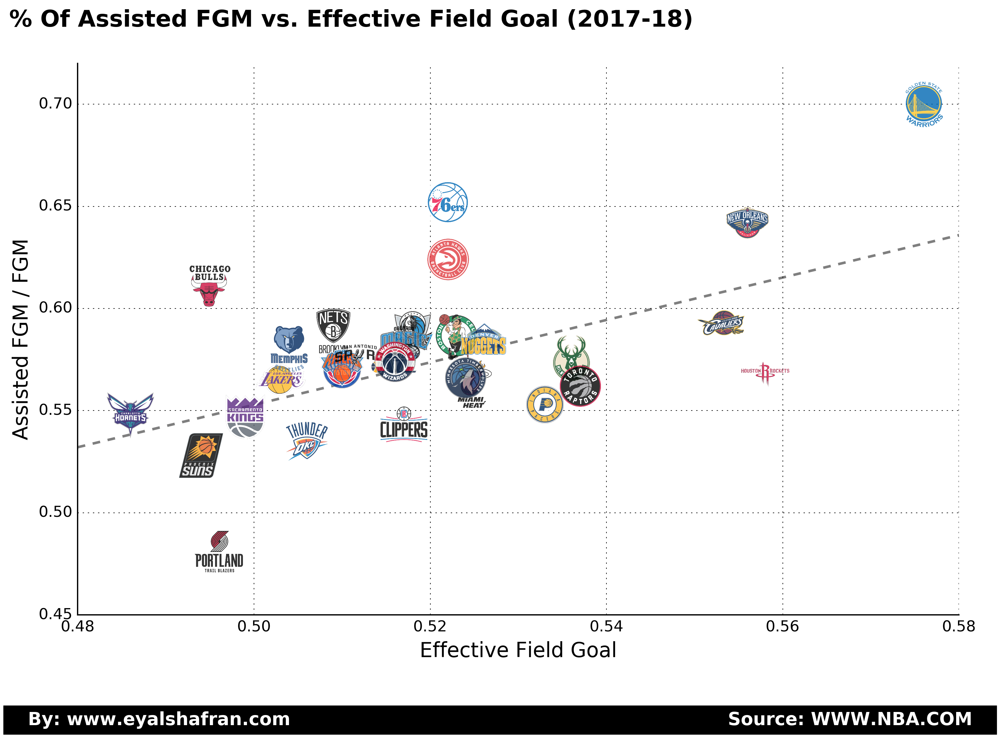

What gets you most excited about the game? A crazy dunk? Buzzer beater? A LeBron style block? If you ask for my opinion it is a beautiful assist. I find nothing more satisfying than a nice team play that ends up in an easy dunk or a creative pass.
My first attempt was to try and show that assists are important for winning. One way to do that is to check whether a team that assists on a lot of their FG also shoots at a higher FG %. So I plotted the % of assisted FG (i.e. assisted FG / Total FG) as a function of the EFG to see if there is a correlation:

Conclusion? At first glance there seems to be a medium-strong correlation. Yes! Assists are very important!
But to be more thorough I also looked at a few other seasons. To my surprise, for some seasons there is a strong correlation and for others a weak or no correlation. For the 2004-05 it even seemed like there is a weak negative correlation (i.e. assisting more = lower EFG). If we look at the last 10 seasons combined, there seems to be no correlation at all. Does this mean assists are not important? I still think they are significant but more importantly, a coach needs to match the team style of play to the strengh of the players on the team. For Golden State the ball and player movement are vital for shooting effeciently. The Rockets on the other hand, can still shoot at a high perecntage without many assists due to the amazing ability of Harden and Paul to score unassisted. So the question of how important assists are for winning is still an open question.
I still think a more in depth investigation of the location of the shooter on an assist is an important piece of information.
I divided the court into 4 section - under the basket (8 ft. or less), short 2 (8-16 ft.), long 2 (16-24 ft.) and 3-Points. Here is an illustration of the court:
We can look at the assist leaders and where their passes go:
For example, Chris Paul leads the NBA in assists to 3-Pointers, Westbrook has the most assists when the shooter is under the basket and Draymond Green has the most for midrange shots. This is highly correlated with the teams style of play - Houston shoots a lot of 3s and do not shot from midrange whereas Golden State shots from everywhere with some of the best midrange jumpers in the game.
We can even do more and look at what I call the assist shot chart. For each player you can scroll through the images and see their passing preference by players and location on the floor:
Westbrook
Assists by Westbrook
James
Assists by LeBron
Harden
Assists by Harden
Wall
Assists by Wall
Paul
Assists by Paul
Green
Assists by Green
A few things I noticed:
- Harden likes to pass to Capela (88 assists) but he only assisted on 6 Chris Paul shots (also due to limited games played together)
- Westbrook assited to Adams and Robrson from 8 ft. or under 84 and 39 times respectively
- LeBron likes to pass to 3s with 4.5 assists per game (second in the league)
- Green leads the NBA in midrange assists mostly due to Thompson and Durant which are excelent from that range
Who is the team with the highest % of assisted FGM?
The 2002-03 Utah Jazz assisted on 73% of their made FG. It was Stockton's last year on the team. Despite the large number of assists, their EFG was a mediocre 48.6%.
Comments
comments powered by Disqus